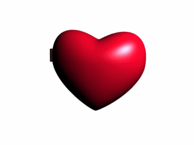

heyo . i was wracking my brain trying to figure out what a blog post about music would involve — i'm generally a casual listener and certainly not an audiophile . but looking at the playlist i chose to keep at the top of this section was good inspiration for yapping about how i like love songs . . but i like the sad ones more (⸝⸝ᵕᴗᵕ⸝⸝)
for context , my <3 playlist is dedicated to my lovely bf . and some of the songs on it might confuse people . . are the lyrics happy at all ? do they even speak to a happy love ? not necessarily . but the playlist represents the good times and the bad times , my strongest emotions during them and towards him — and most importantly , songs don't always have to be taken literally ! i don't think literal interpretations are inherently bad , but when it comes to the overlap between love and art . . there is a lot of nuance and grey that black and white thinking would completely ruin .
( also , it's probably not easy listening for the person i dedicated it to lol ╮(╯▽╰)╭ we have very different music tastes and this , whilst coming from my heart , is also coming from my ears and their favourite bpm & melodies )
maybe the point of a playlist like this is to say , " i love you when i'm happy , and i love you when i'm sad , and i love you when i'm everything in between , too . " going back to my preference for sad love songs over happy ones . . i think that's probably thanks to a mix of having experiences of love tinged with great sadness in my past , making them both more relatable and a stronger emotional connection . i think a decent number of ( at some point in their lives ) sad people would probably agree with that — and maybe musicians can speak to how strongly the music they make affects them depending on its intended mood . do sad love songs " hit harder ? " to me , yes . it's not a bad thing , and doesn't mean happy love songs are " shallow " or less meaningful !
TL;DR , sad love songs > happy love songs , but both can express intended feelings the same way . make your s/o a playlist , or make one for yourself ! ₍ᐢ•ᴗ•ᐢ₎♡ . . no , seriously — i also want to know what songs i would pick to express to myself . . that i love myself ; ;
